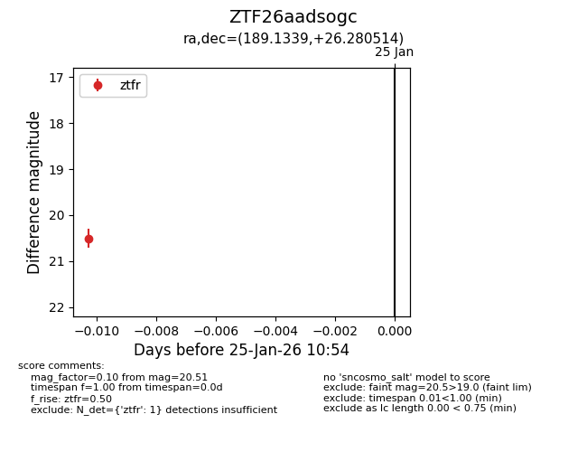
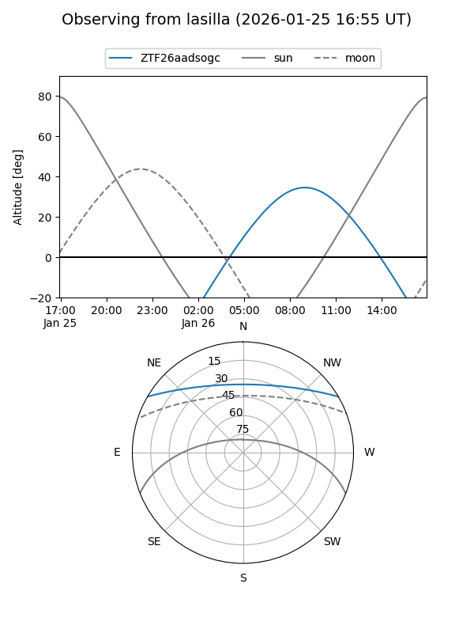
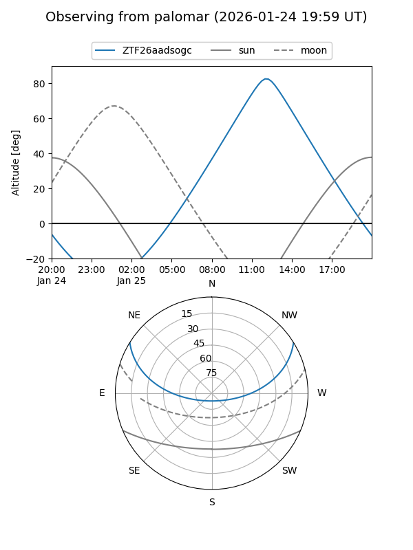

ZTF26aadsogc
Target ZTF26aadsogc at 2026-01-25 10:56
Aliases and brokers:
FINK: link
Lasair: link
ALeRCE: link
alt names
ZTF26aadsogc (ztf,fink_ztf)
Coordinates:
equatorial (ra, dec) = 189.1339,+26.28051
equatorial (HMS+DMS) = 12:36:32.14,+26:16:49.85
galactic (l, b) = (226.3798,+86.56572)
Flags:
Photometry:
last ztfr=20.51
1 ztfr detections
Lightcurve

Visibility


Additional plots